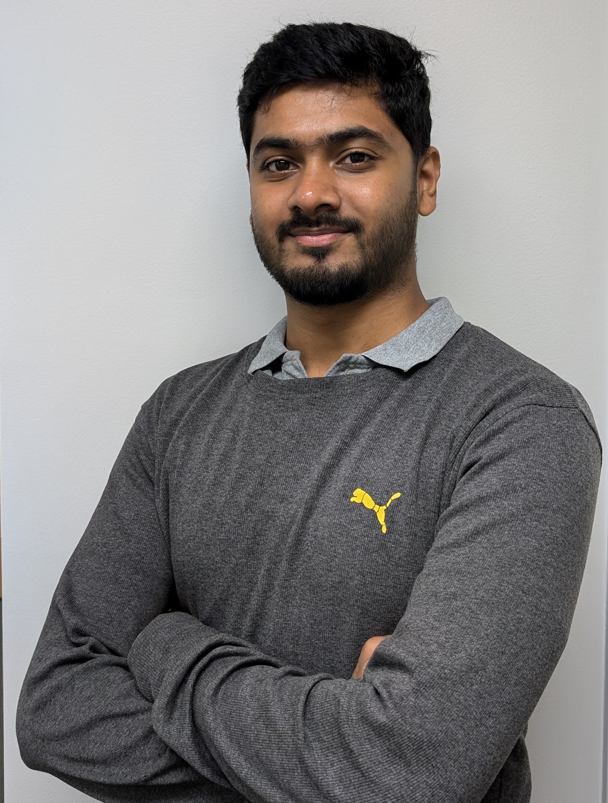

Predoctoral Researcher · Cleveland Clinic · Electrical Engineer · Cleveland State University ·
I am a graduate researcher working in the field of epilepsy, with interests spanning [your research areas]. My work focuses on [brief 1–2 sentence description of your research].
Full list on Google Scholar · ORCID
Mailing Address
[Room / Building Number]
[Department Name]
[University Name]
[City, State ZIP]
United States
Email
your@email.edu
I'm always open to collaborations and conversations about epilepsy research, signal processing, and brain networks. Feel free to reach out!